Çalış.
Kaydet.
Geliş.
ImberGym spor salonu, ev ve açık hava için antrenman günlüğün: programlar, animasyonlu egzersizler, rekorlar ve istatistikler, ayrıca Trackshow'lu GPS turları, beslenme ve takviyeler. Hesap yok, bulut yok: verilerin telefonunda kalır.
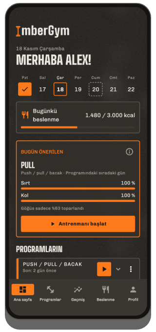
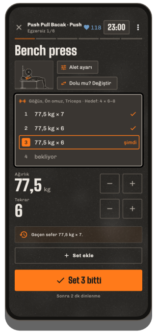
Antrenman için her şey.
Tek bir yerde.
İlk setten dağ yürüyüşüne kadar – ImberGym kaydeder, hesaplar ve nasıl gelişeceğini gösterir.
Bir egzersiz.
Tek odak.
Geçen seferki değerler hazır, artış önerisi, kilit ekranında bile dinlenme sayacı.
Kamera
seninle sayar
Şınav, squat, plank – cihazda tanınır, hiçbir görüntü telefondan çıkmaz.
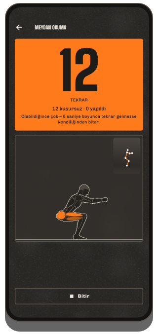
Setten hemen sonra rekorlar
Sesli uyarılı aralıklar – saatte de
Trackshow
GPS turun, eş yükselti eğrileri üzerinde bir kamera uçuşu olarak – paylaşılacak öne çıkanlarla.
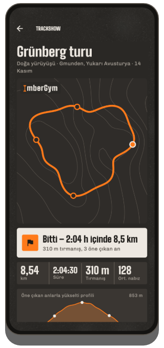
Vücut haritası
ve toparlanma
Hangi kasları çalıştırdığını ve hangilerinin yeniden hazır olduğunu gör.
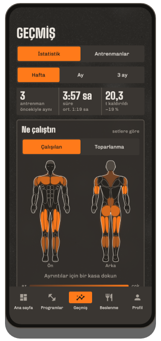
ImberGym neler yapar
Antrenman için ihtiyacın olan her şey – hesap yok, bulut yok.
Antrenman
İlerleme
Vücut ve beslenme
Ve dahası
ImberGym'den görüntüler
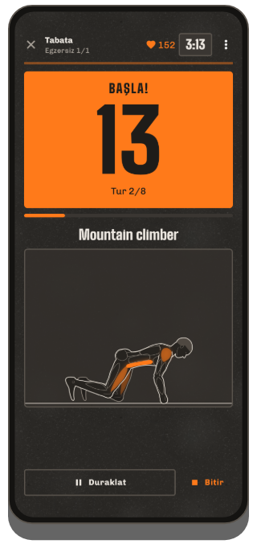
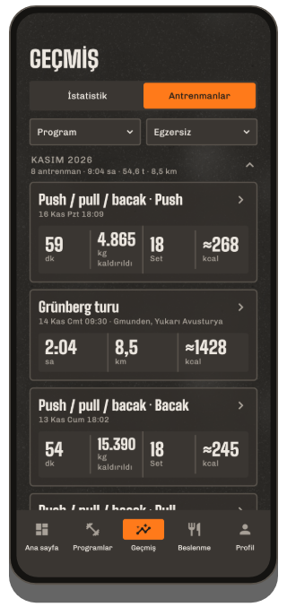
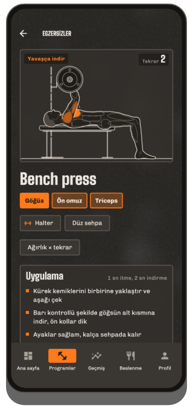
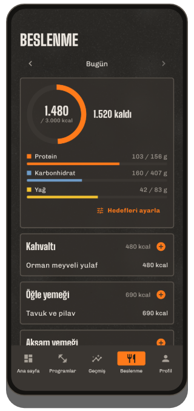
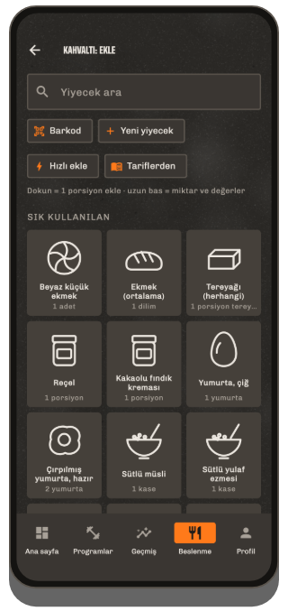
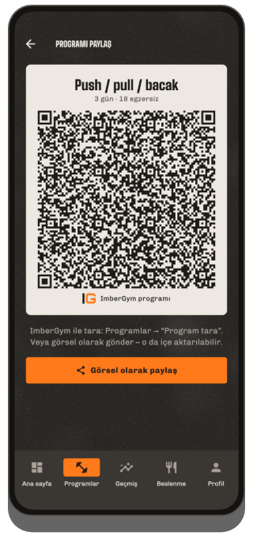
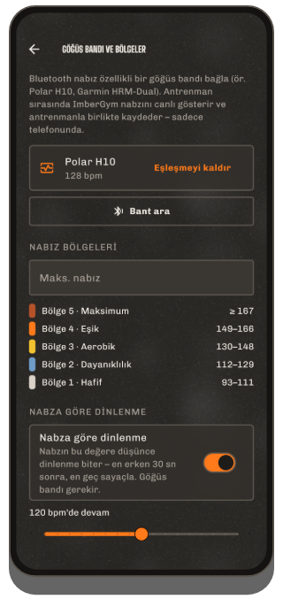
Açık havada
Senin verin.
Senin telefonun.
Yükle ve başla – kayıt yok.
Her şey cihazda, yedek dosya olarak.
İzleyici yok, analiz aracı yok.
Ücretsiz ve Premium
Ücretsiz
- Dinlenme sayaçlı tam antrenmanlar
- 5'e kadar kendi programın ve egzersizin, tüm şablonlar
- Animasyonlu egzersiz kütüphanesi
- Geçmiş, rekorlar, istatistikler, haftalık ve yıllık özet
- Health Connect ile saatten nabız, bölgeler ve nabza göre dinlenmeli canlı göğüs bandı
- Hatırlatıcılı takviyeler, kamerayla tekrar sayan meydan okuma
- Yiyecek kataloglu ve barkodlu kalori sayacı, kilo
- Programları QR kodla aktarma, antrenmanları kart olarak paylaşma
Premium
- Sınırsız kendi programın ve egzersizin, QR kodla program içe aktarma
- Vücut haritası, toparlanma, yağ oranı ve kilo gidişatı
- İnterval antrenman (Tabata ve dahası)
- GPS ile açık hava, video olarak Trackshow
- Saat uygulaması (Wear OS)
- Salonlar, üyelik kartları, gelişim fotoğrafları
- Tüm tarifler, dinamik kalori hedefi
Google Play üzerinden aylık veya yıllık abonelik ya da tek seferlik ömür boyu satın alma – güncel fiyatı uygulamada görürsün. İlk antrenmanından sonra 7 gün ücretsiz dene.
Google Play'deSık sorulan sorular
Hesap gerekiyor mu?
Hayır. ImberGym kayıt olmadan ve kendi sunucusu olmadan çalışır.
Verilerim nerede saklanıyor?
Sadece telefonunda. Bulut, reklam veya analiz yok. Ayrıntılar gizlilik politikasında.
Uygulama çevrimdışı çalışır mı?
Evet. Sadece iki şey interneti kullanır: bilinmeyen bir barkodun Open Food Facts'te aranması ve bir GPS turunun yer adı (bunun için başlangıç noktası Android'in konum hizmetine gönderilir). Geri kalan her şey çevrimdışı çalışır.
Saatimin nabzı ImberGym'e nasıl gelir?
Android'in sağlık verisi deposu Health Connect üzerinden. Saat uygulamanda Health Connect'i aç ve “Nabız”a izin ver: Samsung Health, Garmin Connect, Fitbit, Polar Flow, Withings ve Zepp (Amazfit) gibi uygulamalar bunu yapabilir. Sonra ImberGym'de antrenman ayrıntılarında “Saatten nabzı yükle”ye dokun. Huawei: Huawei Health, Health Connect'e yazmaz; “Health Sync” uygulaması (Play Store) verileri aktarabilir: kaynak Huawei Health, hedef Health Connect, “Nabız”ı seç. İpucu: sürekli ölçmesi için saatte de antrenman başlat.
Hangi göğüs bantları çalışır?
Standart nabız profiline sahip her Bluetooth göğüs bandı, ör. Polar H9/H10, Garmin HRM-Dual veya Wahoo TICKR. Profilde “Göğüs bandı ve bölgeler” altında bir kez eşleştir: sonra her antrenmanda kendiliğinden bağlanır.
Bir programı nasıl paylaşırım?
Program düzenleyicide QR simgesine dokun ve kodu göster ya da görsel olarak gönder. Diğer kişi “Programlar” sekmesinde “Program tara” ile, görselden de tarar. Tüm program koddadır, hiçbir şey internete yüklenmez.
Telefon değiştirince verilerime ne olur?
Profilde “Veriler ve yedekleme” altında bir yedek oluştur ve ör. Google Drive'a kaydet. Yeni telefonda ilk ekranda “Yeni telefon mu? Yedeği geri yükle”yi seç.
Strong veya Hevy'den geliyorum: antrenmanlarımı aktarabilir miyim?
Evet. Eski uygulamanın CSV dışa aktarımını “Veriler ve yedekleme” → “Antrenmanları içe aktar” ile içe aktar. ImberGym egzersizleri eşleştirir ve önce bir önizleme gösterir.
Gelişim fotoğraflarım internete yükleniyor mu?
Hayır. Uygulamanın özel bir klasöründe saklanır, galeride görünmez ve Android yedeklerinden bile hariçtir.
Beslenmeyi gizleyebilir miyim?
Evet. Tüm bölüm profilde kapatılabilir: ImberGym saf bir antrenman günlüğü olur.
Verilerimi nasıl silerim?
Tek tek kayıtları doğrudan uygulamada; hepsini birden uygulamayı kaldırarak.